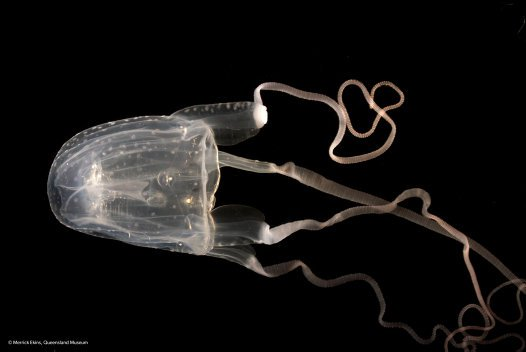

The moon jellyfish has hundreds of short, fine tentacles that line the bell margin.
A lion's mane jellyfish has up to 1,200 tentacles divided into eight clusters.

A irukandji box jellyfish has four long tentacles
Different sizes of jellyfish
The lion's mane jellyfish (Cyanea capillata ) is the largest among the jelly species, with the largest known specimen stretching across 120 feet (36.5 meters) from its top to the bottom of its tentacles.
Nemopilema nomurai can grow up to 2 m (6 ft 7 in) in diameter and weigh up to 200 kg (440 lb), the diameter when fully grown is slightly greater than the height of an average human.
The Stygiomedusa Gigantea is more than one meter (3.3 feet) across and trails four ribbon-like oral (or mouth) arms that can grow to more than 10 meters (33 feet) in length.
The Barrel Jellyfish is 1 metre wide and weigh 25kg.